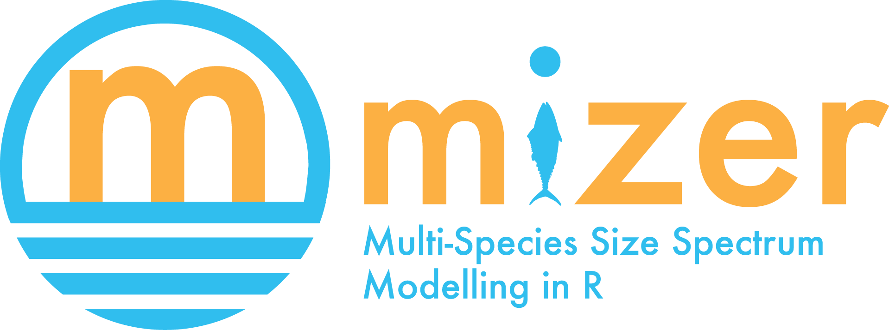

Online course
In this hands-on online course you will learn about the principles of size based multi-species fisheries modelling and the implementation of these principles in the R package mizer. You will build a mizer model for the Celtic sea from scratch and will also be encouraged to build a model for your own area of interest. You will then run various scenarios to explore how the ecosystem reacts to changes in fishing or other stressors.
The course material was adapted from two previous three-week courses in August 2022 and in November 2022.
Tutorials
The course has three parts, each consisting of several tutorials.
Part 1: Understand
You will gain an understanding of size spectra and their dynamics by exploring simple example systems hands-on with mizer.Part 2: Build
You will build your own multi-species mizer model for the Celtic sea, following our example. You can also create a model for your own area of interest.Part 3: Use
You will explore the effects of changes in fishing and changes in resource dynamics on the fish community and the fisheries yield. You will run your own model scenarios.
There are exercises dotted throughout the tutorials.
To get started, install the tools you need and then go to Part 1 to learn about size spectra and their dynamics.
This course was developed by Gustav Delius at the University of York as part of the Pyramids of Life, funded by UK Research and Innovation via the Sustainable Management of Marine Resources fund. It builds on an earlier collaboration with Asta Audzijonyte as a part of the Sustainable inland fisheries project, funded by the European Regional Development Fund. Many thanks to Ken Andersen and Julia Blanchard for contributing videos.